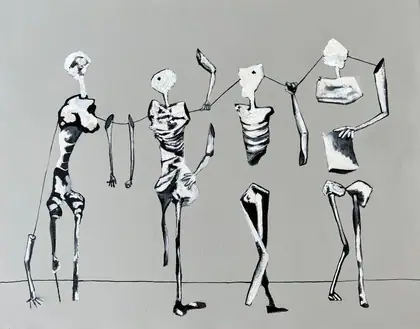
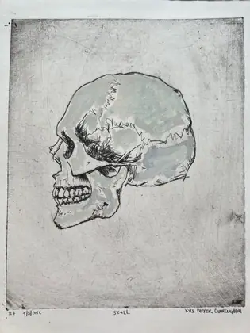

Wall-scaleover 600 mm on the long side · 28 works
These are the ones that need a room. the mother bear is 1308 mm across — you meet it at chest height and it does not step back.





Arm's reach300–600 mm · 30 works
The working middle of the practice: a size you can carry finished across the studio in one hand and photograph on the floor.


Heldunder 300 mm · 37 works
Almost all of these are drypoints and the small panels — printed on a press that fits on a table, on paper torn by hand.




What is missing, and it matters
Sixty works in the catalogue have no measurements — 95 of 155 do. A wall like this can only hang what has been measured, so the sixty are simply absent from it rather than shown wrongly. If this became a real page it would be the best argument the site could make for finishing the dimension backfill: every work measured is one more thing that can stand in a room with the others.